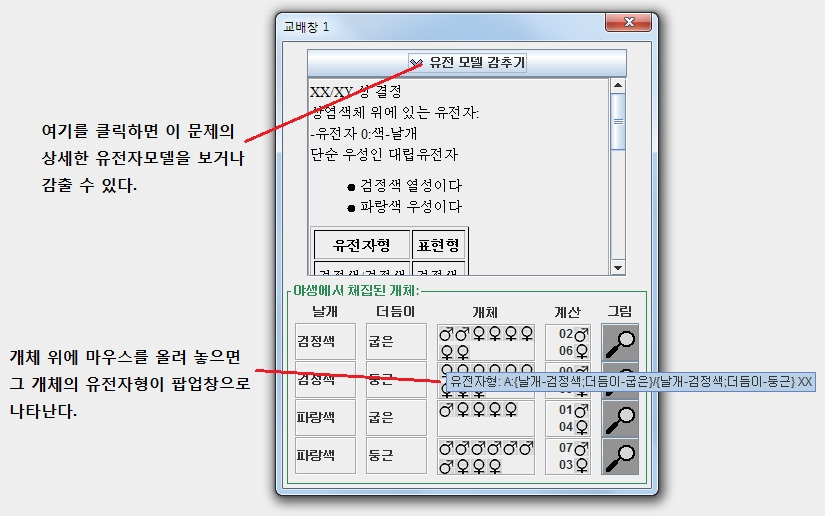
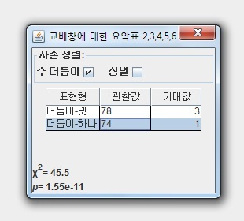

VGLII - 가상 유전 실험 II
가상 유전 실험의 목적과 목표
VGLII에서 볼 수 있는 유전 모형
가상 유전 실험 II 실행하기
새 문제로 시작하는 방법
일반 실험 모드
유전자 표시 모드
이전에 저장해 두었던 교배를 여는 방법
실험중인 교배를 저장하는 방법
교배를 다른 이름으로 저장하는 방법
실험중인 문제를 닫는 방법
두 개체를 교배하는 방법
이제까지 수행한 교배를 인쇄하는 방법
파일로 저장하는 방법
한 세트의 교배창을 요약하기
교배창을 닫기/다시열기
교배창 재배열하기
각 표현형의 자세한 특징 알기
VGLII 프로그램의 자세한 특징 알기
가상 유전 실험의 목적과 목표
여러분이 교배를 시작하면 생물체 여러 마리가 들어 있는 교배 창이 나타난다. 각 생물체들은 3가지 특징(Character)에 대해서 각각 2~6가지 서로 다른 형질(trait)중 한 가지가 나타나게 된다(예를들어, 몸 색이 특징이라면 붉은색의 몸과 초록색의 몸이 형질로 나타날 수 있다). 여러분이 해야 할 일은 이 특징들이 어떻게 유전되는지를 발견하는 것이다. 이를 위해서는 특정한 개체들을 교배(crossing)시키고 그 자손을 관찰해야 한다. 그리고 그 결과 자료를 사용하여 이 특징을 나타내는 유전 현상을 결정하는데 기초가되는 유전 모델(genetic models)을 유추해야 한다. 여러분이 유추한 유전 모델이 옳다고 확신할 수 있도록 충분한 정보를 수집해서 결정을 내려야 한다. - 여러분이 유추한 유전 모델이 옳은지의 여부를 프로그램에서 알려주지는 않는다(유전자 표시 모드(Practice Mode) 에서는 알 수 있다).
새 교배를 시작하면 VGLII는 사용 가능한 특징(Character) 목록 중에서 한가지 특징을 무작위로 선택한다. 그리고 나서 가능한 유전 모델 또한 유전 모델(genetic models) 목록에서 무작위로 선택한다. 가능한 유전 모델의 범위는 선생님이 문제 유형을 만들 때 정해진다. 교배 유형이 다르면 가능한 유전 모델 유형이 많아지기도 하고 적어지기도 하며, 유전자 표시 모드(Practice Mode)는 문제 유형을 볼 수도 있고 숨길 수도 있다. 교배가 무작위로 주어지므로 같은 특징이라도 다른 교배에서는 다른 방법으로 유전이 일어날 수도 있다.
다음으로, VGLII는 각 특징에서 특정한 형질(trait)을 무작위로 선택하고, 특정한 유전자형에 대해 무작위로 할당한다. 교배창에 있는 각 개체는 무작위로 유전자형을 가지며, 이 개체들은 교배창 1에 나타난다.
여러분이 할 것은 다른 교배창에 있는 개체들을 교배(cross)하고 그 자손을 관찰하는 것이다. 여러분은 이 자료로부터 특별한 특징이 어떻게 유전되는지에 대한 유전 모델을 결정해야 한다.
VGL에서 볼 수 있는 유전 모형
VGLII의 모든 교배에는 두개나 세개의 대립유전자를 가지는 유전 모델이 포함되어 있다. 이에 근거하여 변화를 줄 수 있는 여러 가지 특성이 존재한다.:
- 대립 유전자 수. 대립 유전자는 두 개 또는 세 개 이다:
- 대립 유전자 두 개. 이 경우에 대립 유전자가 상호작용하는 방법이 두 가지가 있다:
- 단순 우성: 잡종인 경우에는 열성 순종인 경우와 같은 표현형을 나타낸다. 이 경우에는 두개의 대립 유전자인 A와 a를 가진다:
- 불완전 우성: 잡종인 경우에는 순종인 두 경우와 다른 표현형을 가진다. 당연히 잡종은 항상 중간이며 VGL(VGLII의 이전 프로그램) 에서는 없던 것이다.
- 대립 유전자 세 개. 이 경우에 대립 유전자가 상호작용하는 방법이 두 가지가 있다:
- 위계적 우성(Hierarchical dominance): A는 B 와 C에 우성; B는 C에 우성; C는 모두에 열성.
- AA = 초록
- AB = 초록
- AC = 초록
- BB = 빨강
- BC = 빨강
- CC = 파랑
- 순환적 우성(Circular dominance): A는 B에 우성; B는 C에 우성; C는 A에 우성.
- AA = 초록
- AB = 초록
- AC = 파랑
- BB = 빨강
- BC = 빨강
- CC = 파랑
- 특징이 성염색체와 연관이 되었는가 안되었는가; 두 가지 방법이 있을 수 있다:
- 성염색체와 연관되지 않음 - 이 특징을 나타내는 유전자는 상염색체에 의해 운반되며 양쪽 성에 동일하게 유전된다.
- 성염색체와 연관됨 - 이 특징을 나타내는 유전자는 성염색체위에 있으며 성에 따라 다르게 유전된다. 여기에는 두 가지 형태가 있다:
- XX/XY 암컷은 XX; 수컷은 XY.
따라서 Y는 이 개체가 수컷을 만든는데 필요한 유전자 외에 다른 유전자는 운반하지 않는다.
- ZZ/ZW 수컷은 ZW; 암컷은 ZZ.
따라서 W는 이 개체가 암컷을 만드는데 필요한 유전자 외에 다른 유전자는 운반하지 않는다.
- 같은 염색체 위에 있는 유전자가 연관되거나 안되었거나; 재조합 빈도는 0%(완전 연관)에서 50%(완전 독립) 사이에 다양한 값을 가질 수 있다.
가상 유전 실험 II 실행하기
VGLII를 실행하려면 VGLIIx.x 파일을 더블클릭하면 된다. 주의: 문제폴더가 VGLIIx.x 파일과 같은 폴더 내에 있어야 한다. 툴바 버튼은 아래 그림과 같다:

새 문제로 시작하는 방법
VGLII를 시작할 때 다음과 같은 툴바가 보일 것이다:
"파일" 메뉴에서 "새 문제.."를 선택하거나 툴바의 "새 문제.."를 클릭하면 교배 유형 파일 목록이 나타난다. 이때 보이는 파일은 난이도가 증가하는 순서대로 나타난다. 추가적인 교배 유형파일은 VGLAdimn 프로그램을 사용하여 만들 수 있다. 파일을 선택하고 "교배 열기.." 버튼을 클릭하시오.
일단 교배가 시작되면 화면에 하나의 창(교배창 1)이 열릴 것이다. 이 교배창이 여러분 프로젝트의 출발점이 된다. 이 개체들은 필요한 것은 아니지만 순수 교배(pure-breeding: 동일 유전자를 가지고 있는 부모들이어서 자손이 동일하게 나타나는 교배인 경우)가 가능하다.
일반 실험 모드
일반 실험 모드에서의 교배창은 아래 그림과 같다:
일련의 교배(crosses)는 아래 그림과 같다:
이것은 다음과 같이 볼 수 있다:
교배 1:
부모 : 교배창 1의 5개/빨강색 수컷 X 교배창 1의 5개/바랑색 암컷
자손 : 11마리 5개/파란색
(교배창 2) 16마리 5개/빨강색
유전자 표시 모드
선생님이 어떤 문제에 대해 유전자 표시 모드를 볼 수 있도록 한 경우에는, 각 개체의 유전자형과 특징에 대한 유전 모델에 대한 "답(answer)"이 무엇인지 볼 수 있다.
유전자 표시 모드에서 교배창은 아래 그림과 같다:

이것은 일반 실험 모드의 교배창과 같지만, 유전 모델과 유전자형을 볼 수 있는 점이 다르다.
이전에 저장해 두었던 교배를 여는 방법
 이것은 여러분이 이전에 작업하고 저장했던 교배를 다시 불러올 때 사용할 수 있다. 교배를 열기 위해서는 "파일" 메뉴에서 "교배 열기.."를 선택하거나 툴바에 있는 교배 열기 버튼을 클릭하면 된다. 교배 파일을 선택하기 위한 창이 열릴 것이다. 이전에 저장했던 교배 파일이 있는 폴더를 찾아간다. 파일을 선택하고 "교배 열기.." 버튼을 클릭한다. VGLII는 그 파일을 읽고 열어서 그 교배를 저장하고 닫기 이전의 상태* 그대로를 볼 수 있도록 해준다.
이것은 여러분이 이전에 작업하고 저장했던 교배를 다시 불러올 때 사용할 수 있다. 교배를 열기 위해서는 "파일" 메뉴에서 "교배 열기.."를 선택하거나 툴바에 있는 교배 열기 버튼을 클릭하면 된다. 교배 파일을 선택하기 위한 창이 열릴 것이다. 이전에 저장했던 교배 파일이 있는 폴더를 찾아간다. 파일을 선택하고 "교배 열기.." 버튼을 클릭한다. VGLII는 그 파일을 읽고 열어서 그 교배를 저장하고 닫기 이전의 상태* 그대로를 볼 수 있도록 해준다.
*상태 - 여기서 상태는 사용자에 의해서 만들어진 전체 교배창을 수집해 놓은 것으로 정의할 수 있다. 여기에는 사용자에 의해 만들어진 교배창이 포함되어 있다. 즉, 이전에 저장해 둔 교배 창을 열면 그 교배창을 닫을 때까지 여러분이 만들었던 교배창이 모두 나타나게 된다.
실험중인 교배를 저장하는 방법
 이것은 여러분이 현재 교배한 결과를 하나의 파일로 저장하는데 사용할 수 있다. 여러분의 교배를 저장하려면 "파일"메뉴에서 "교배 저장" 메뉴를 선택하거나 툴바에 있는 "교배 저장"버튼을 클릭하면 된다. 여러분이 수행한 교배를 하나의 파일로 저장할 수 있는 폴더를 선택해서 저장할 수 있도록 창이 열린다. 여러분의 작업을 저장하려는 폴더로 찾아 들어간다. "파일 이름" 영역에 여러분의 교배를 저장하고 싶은 파일 이름을 넣는다. 그리고 나서 "열기" 버튼을 클릭한다. 이렇게 하면 파일을 하나 만들고 열어서 해당 필드에 이름을 만들어 넣고 여러분이 작업한 내용을 그 안에 저장하는 것이다. 이 파일은 .wrk라는 확장자를 가질 것이다.
이것은 여러분이 현재 교배한 결과를 하나의 파일로 저장하는데 사용할 수 있다. 여러분의 교배를 저장하려면 "파일"메뉴에서 "교배 저장" 메뉴를 선택하거나 툴바에 있는 "교배 저장"버튼을 클릭하면 된다. 여러분이 수행한 교배를 하나의 파일로 저장할 수 있는 폴더를 선택해서 저장할 수 있도록 창이 열린다. 여러분의 작업을 저장하려는 폴더로 찾아 들어간다. "파일 이름" 영역에 여러분의 교배를 저장하고 싶은 파일 이름을 넣는다. 그리고 나서 "열기" 버튼을 클릭한다. 이렇게 하면 파일을 하나 만들고 열어서 해당 필드에 이름을 만들어 넣고 여러분이 작업한 내용을 그 안에 저장하는 것이다. 이 파일은 .wrk라는 확장자를 가질 것이다.
교배를 다른 이름으로 저장하는 방법
 이것은 여러분이 이미 만들었지만 이름은 다른 파일을 하나 더 만드는 것 외에는 교배를 저장하는 것과 동일하다.
이것은 여러분이 이미 만들었지만 이름은 다른 파일을 하나 더 만드는 것 외에는 교배를 저장하는 것과 동일하다.
실험중인 문제를 닫는 방법
이것은 여러분이 교배하든 것을 닫을 때 사용할 수 있다. 교배를 닫으려면 "파일" 메뉴에서 "교배 닫기.." 메뉴를 선택하거나 툴바에서 닫기 버튼을 클릭하면 된다. 교배를 닫을 것인지를 확인하는 창이 뜬다. 이때 "예" 라고 대답하고 저장하지 않은 교배가 있다면, 프로그램은 여러분의 교배를 저장하도록 할 것이다. "예"를 선택하면 여러분이 선택한 폴더에서 여러분의 교배를 파일로 저장하는데 도움을 주는 창을 열 것이다. "아니오"를 선택하며 여러분의 교배를 저장하지 않고 프로그램을 끝낼 것이다.
두 개체를 교배하는 방법
 두 개체를 교배하려면 먼저 열려져 있는 교배 창에서 암컷과 수컷을 선택해야 한다.(암컷과 수컷은 서로 다른 교배창에서 선택해도 괜찮다) 이 두 개체를 교배하여 자손을 얻기 위해서는 "유틸리티"메뉴의 "교배"메뉴를 선택하거나 툴바의 "교배"버튼을 클릭한다. 이것은 두 부모로부터 만들어진 한 세트의 자손이 있는 교배창을 만들 것이다.
두 개체를 교배하려면 먼저 열려져 있는 교배 창에서 암컷과 수컷을 선택해야 한다.(암컷과 수컷은 서로 다른 교배창에서 선택해도 괜찮다) 이 두 개체를 교배하여 자손을 얻기 위해서는 "유틸리티"메뉴의 "교배"메뉴를 선택하거나 툴바의 "교배"버튼을 클릭한다. 이것은 두 부모로부터 만들어진 한 세트의 자손이 있는 교배창을 만들 것이다.
이제까지 수행한 교배를 인쇄하는 방법
 교배를 시작한 첫번째 교배창의 개체나 그 이후에 교배한 교배창을 프린트하기 위해서는 (왼쪽에 보이는것과 같이) 인쇄 버튼을 누르거나 "파일" 메뉴에서 "교배 인쇄"를 선택하면 된다. 프린터하기 전에 "파일" 메뉴에서 "페이지 설정"을 선택하여 프린터를 설정해야 할 수도 있다.
교배를 시작한 첫번째 교배창의 개체나 그 이후에 교배한 교배창을 프린트하기 위해서는 (왼쪽에 보이는것과 같이) 인쇄 버튼을 누르거나 "파일" 메뉴에서 "교배 인쇄"를 선택하면 된다. 프린터하기 전에 "파일" 메뉴에서 "페이지 설정"을 선택하여 프린터를 설정해야 할 수도 있다.
파일로 저장하는 방법
 이것은 여러분의 교배한 것을 프린트 하는 것과 유사한 형태로 저장하여 웹 브라우저 상에서 보거나 워드프로세서에서 보고 싶을 때 사용할 수 있다. 이를 위해서는 "파일" 메뉴에서 "교배를 파일로 인쇄"를 선택하거나 툴바에서 "교배를 파일로 인쇄"를 선택하면 된다. 그렇게 하면 창이 열리고 파일 이름을 정하고 원하는 폴더에 저장하면 된다. 파일 이름을 정하고 위치를 정하고 나면 "인쇄" 버튼을 클릭해주어야 한다. 여러분이 교배한 내용이 프린트되는 것과 같은 형태로 하나의 파일에 저장되는데 파일의 확장자는 .html로 저장될 것이다.
이것은 여러분의 교배한 것을 프린트 하는 것과 유사한 형태로 저장하여 웹 브라우저 상에서 보거나 워드프로세서에서 보고 싶을 때 사용할 수 있다. 이를 위해서는 "파일" 메뉴에서 "교배를 파일로 인쇄"를 선택하거나 툴바에서 "교배를 파일로 인쇄"를 선택하면 된다. 그렇게 하면 창이 열리고 파일 이름을 정하고 원하는 폴더에 저장하면 된다. 파일 이름을 정하고 위치를 정하고 나면 "인쇄" 버튼을 클릭해주어야 한다. 여러분이 교배한 내용이 프린트되는 것과 같은 형태로 하나의 파일에 저장되는데 파일의 확장자는 .html로 저장될 것이다.
한 세트의 교배창을 요약하기
하나 또는 여러 개의 교배 창을 선택하고 유틸리티 메뉴에서 "요약표 만들기"를 선택하면 선택한 교배창에 있는 각 개체들의 숫자를 요약해서 볼 수 있다.
먼저 요약하려는 교배창을 하나씩 더블클릭한다. 그러면 선택된 교배창 바깥쪽이 붉은 색으로 변할 것이다. 선택을 취소할 경우에는 선택된 창을 더블클릭하거나 유틸리티 메뉴에서 "모든 교배창 선택취소"를 선택할 수 있다.
요약하려는 모든 선택창을 선택하고 나면 유틸리티 메뉴에서 "요약표 만들기"를 선택하면 다음과 같이 나타날 것이다:

창의 제일 위쪽에는 7, 8, 9, 10, & 11 교배창의 요약을 나타낸다.
이것은 둘 다 잡종인 부모로부터 교배한 결과이므로 아마도 3:1의 비율이 나올 것이라고 예측할 수 있다.
관찰 결과 비율 120:26이므로 예상한 비율과 거의 가깝게 나왔다.
여러분은 제일 위쪽 창에서 적절한 특징을 선택하므로써 요약하려는 특징을 선택할 수 있다.
교배창을 닫기/다시열기
이것은 여러분이 이제까지 수행했던 교배창을 닫거나 다시 열 때 사용할 수 있다. "유틸리티" 메뉴의 "교배창 보이기"를 선택하면 이제까지 수행했던 교배창의 목록이 보이는 창이 뜰 것이다. 지금 현재 보이는 교배창들만 체크표시가 되어 있을 것이고 보이지 않는 교배창에는 체크 표시가 되어있지 않을 것이다. 나타내고 싶은 교배창 옆에는 체크 표시를 하고, 나타내고 싶지 않은 창 옆에는 체크 표시를 제거하시오.
교배창 재배열하기
이것은 여러분이 이제까지 교배한 창을 순서대로 재배열할 때 사용할 수 있다. "유틸리티"메뉴의 "교배창 재배열" 메뉴를 선택하면 보이는 모든 교배창이 위에서 아래로, 왼쪽에서 오른쪽으로 재배열될 것이다.
각 표현형의 자세한 특징 알기
교배창에 있는 개체들의 표현형에 대해 보다 자세한 모양을 보고 싶으면 그 교배창에 있는 표현형 그림을 클릭하면 된다. 표현형 그림을 클리하면 크고 아주 자세한 표현형 그림창이 떠서 그 개체의 표현형을 자세히 볼 수 있다. 이 그림들은 약간은 개략적으로 표현형이 어떻게 생겼는지를 보여주기 위해서 나타낸 것이다. 아래 그림처럼 나타난다:
VGLII 프로그램의 자세한 특징 알기
 VGLII 프로그램에 대해 보다 자세한 내용을 알고 싶으면 "도움말" 메뉴의 "VGLII 에 대하여"를 선택하면 정보창을 띄워서 자세한 사항을 나타내준다.
VGLII 프로그램에 대해 보다 자세한 내용을 알고 싶으면 "도움말" 메뉴의 "VGLII 에 대하여"를 선택하면 정보창을 띄워서 자세한 사항을 나타내준다.